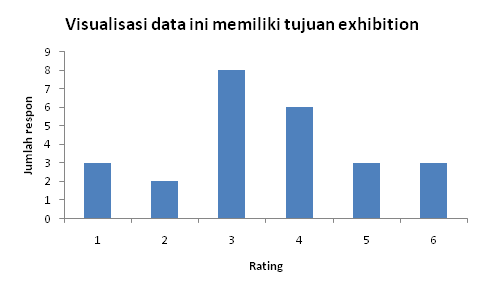
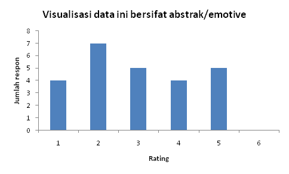
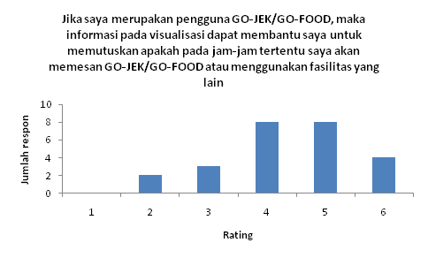
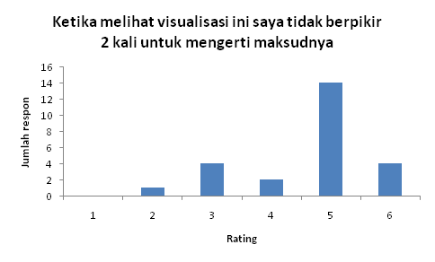
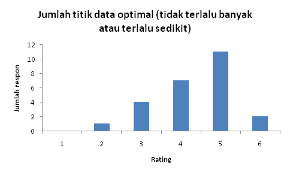
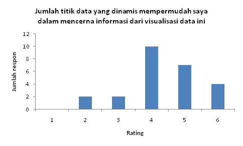
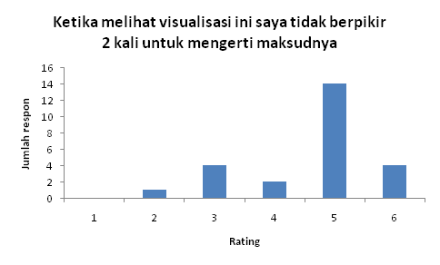
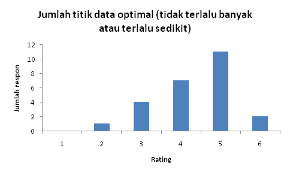
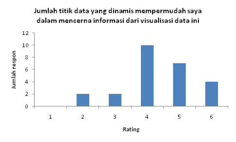

{{ vm.errorMessage }}
Pesanan per daerah
Pesanan per jam
Berikut ini adalah hasil kuesioner evaluasi visualisasi data ini



 






Rincian hasil evaluasi
| Jumlah respon untuk setiap angka rating | ||||||
|---|---|---|---|---|---|---|
| 1 | 2 | 3 | 4 | 5 | 6 | |
| Tujuan dan sifat visualisasi data | ||||||
| Visualisasi data ini memiliki tujuan explanatory | 1 | 1 | 2 | 5 | 10 | 6 |
| Visualisasi data ini memiliki tujuan exploratory | 2 | 4 | 3 | 6 | 5 | 5 |
| Visualisasi data ini memiliki tujuan exhibition | 3 | 2 | 8 | 6 | 3 | 3 |
| Visualisasi data ini bersifat pragmatik/analitik | 0 | 3 | 3 | 4 | 9 | 6 |
| Visualisasi data ini bersifat abstrak/emotive | 4 | 7 | 5 | 4 | 5 | 0 |
| Tujuan khusus visualisasi data | ||||||
| Judul/deskripsi visualisasi data ini telah sesuai dengan visualisasi data yang ditampilkan | 0 | 0 | 1 | 7 | 6 | 11 |
| Dari visualisasi ini saya mendapat gambaran mengenai jumlah pesanan GO-JEK pada waktu dan tempat tertentu | 1 | 1 | 3 | 7 | 8 | 5 |
| Jika saya merupakan bagian dari marketing GO-JEK, maka informasi yang saya dapatkan dari visualisasi ini dapat membantu saya melakukan penempatan driver secara optimal | 0 | 0 | 2 | 5 | 9 | 9 |
| Jika saya merupakan bagian dari marketing GO-JEK, maka informasi yang saya dapatkan dari visualisasi ini dapat membantu saya menentukan tarif secara optimal | 0 | 1 | 3 | 8 | 8 | 5 |
| Jika saya merupakan pengguna GO-JEK/GO-FOOD, maka informasi pada visualisasi dapat membantu saya untuk memutuskan apakah pada jam-jam tertentu saya akan memesan GO-JEK/GO-FOOD atau menggunakan fasilitas yang lain | 0 | 2 | 3 | 8 | 8 | 4 |
| Interaksi pada visualisasi | ||||||
| Fitur pada visualisasi data ini mudah digunakan | 0 | 0 | 2 | 5 | 9 | 9 |
| Slider range waktu (jam) membantu saya untuk mendapatkan informasi dengan lebih baik | 0 | 0 | 1 | 4 | 12 | 8 |
| Fitur pada Google Maps (zoom in/out dan geser) membantu saya untuk mendapatkan informasi dengan lebih baik | 1 | 1 | 2 | 7 | 6 | 8 |
| Slider range dan fitur pada Google Maps (zoom in/out dan geser) sudah cukup untuk filter | 1 | 4 | 6 | 4 | 5 | 5 |
| Fungsional visualisasi data | ||||||
| Metode visualisasi yang digunakan sudah tepat | 0 | 0 | 3 | 3 | 14 | 5 |
| Pemilihan data untuk visualisasi ini sudah tepat | 0 | 2 | 3 | 5 | 11 | 4 |
| Desain visualisasi | ||||||
| Ketika melihat visualisasi ini saya tidak berpikir 2 kali untuk mengerti maksudnya | 0 | 1 | 4 | 2 | 14 | 4 |
| Bentuk yang dipilih untuk mewakili data sudah tepat | 0 | 0 | 4 | 5 | 12 | 4 |
| Warna yang dipilih untuk mewakili data sudah tepat | 0 | 2 | 1 | 4 | 10 | 8 |
| Jumlah titik data optimal (tidak terlalu banyak atau terlalu sedikit | 0 | 1 | 4 | 7 | 11 | 2 |
| Jumlah titik data yang dinamis mempermudah saya dalam mencerna informasi dari visualisasi data ini | 0 | 2 | 2 | 10 | 7 | 4 |
| Titik data yang bebeda terlihat dapat dibedakan | 0 | 1 | 5 | 8 | 9 | 2 |
| Pewarnaan heat map secara relatif mempermudah saya dalam mencerna informasi dari visualisasi data ini | 0 | 0 | 3 | 5 | 11 | 6 |
| Terdapat variabel visual yang menonjol tetapi sebetulnya merepresetasikan sesuatu yang tidak penting | 2 | 3 | 10 | 5 | 2 | 3 |
Jml order:
{{ vm.legend.min }}
{{ vm.legend.mid }}
{{ vm.legend.max }}